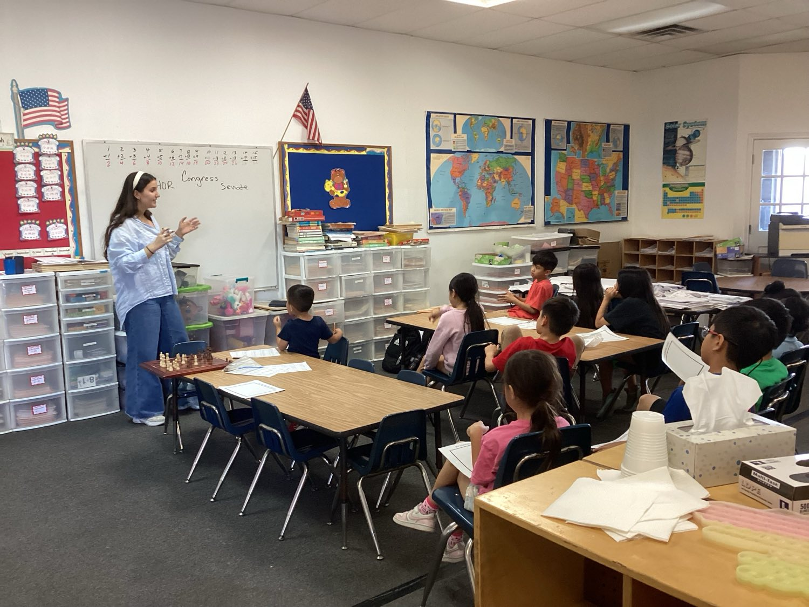
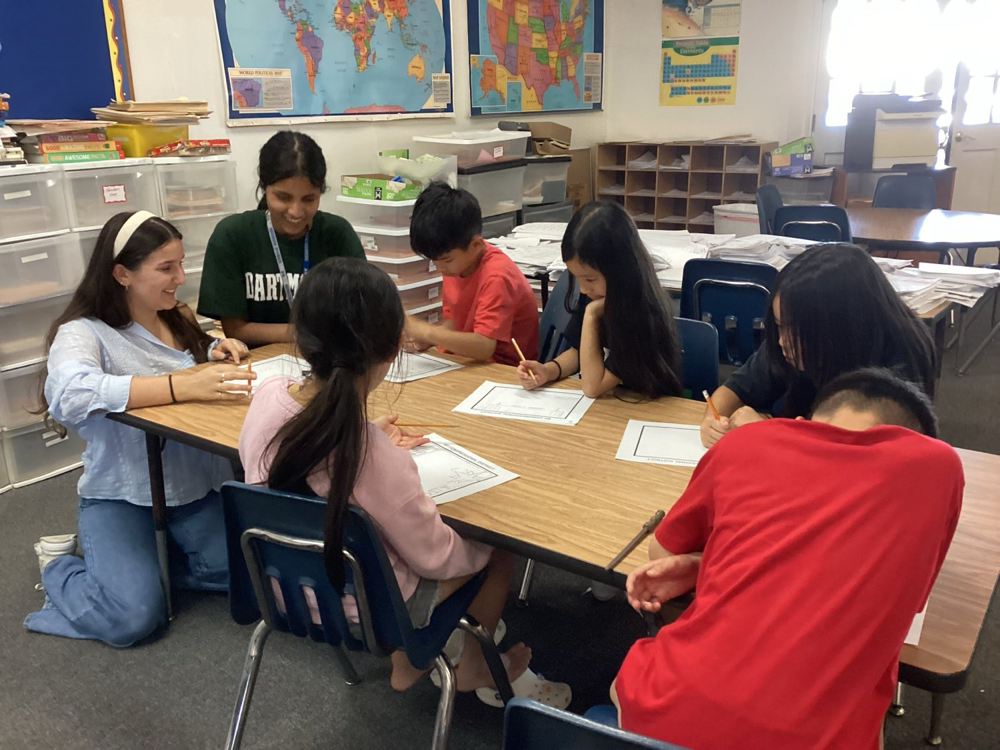

Bringing Civic Engagement to every Classroom.
A youth-led nonprofit delivering nonpartisan civics curricula to elementary and middle school students — one state chapter at a time.
A diagram of the YCN chapter network. Twelve active state chapters: Texas, California, Ohio, Illinois, Pennsylvania, Georgia, North Carolina, Virginia, Michigan, Alabama, New Jersey, and Rhode Island.
$7.5K+
Raised
10+
State Chapters
5+
Organization Partnerships
600+
Kids Reached
Who we serve
Three paths, one mission.
Every part of this work needs someone different. Find the one that sounds like you.
-
High School Volunteers
Lead civics workshops in your community. No prior experience needed — just a passion for helping younger students understand how democracy works.
Start volunteering -
Educators & Hosts
Bring YCN's nonpartisan curricula into your classroom or after-school program. We provide the materials, training, and volunteer support.
Partner with us -
Funders & Partners
Support the next generation of informed citizens. Your grant or sponsorship directly funds curriculum development and chapter expansion.
Fund our mission
How it works
Signup to classroom in three steps.
-
01
Volunteer
High schoolers sign up through their state chapter. No prerequisites — just enthusiasm for civic education.
-
02
Train
Complete YCN's structured training program. Learn our nonpartisan curriculum, classroom management basics, and workshop facilitation.
-
03
Teach
Lead engaging civics workshops for elementary and middle school students. Real impact, real classrooms.
In the classroom
This is what a lesson actually looks like.
No stock photography. These are our volunteers, running the Congress lesson with 3rd through 5th graders.


Democracy starts in the classroom.
From the chapters
What it looks like on the ground.
Teaching 4th graders about local government made me realize how much I didn't know myself. YCN gave me the training and confidence to lead a classroom.
The curriculum is genuinely nonpartisan. Parents from both sides of the aisle have told me they appreciate how balanced it is.
I started as a volunteer and now I run our state chapter. YCN showed me that high schoolers can create real change.
Open curriculum
Take our lessons into your own classroom.
You don't need to be a YCN chapter to teach this. All 17 lessons are free, nonpartisan, and built for grades 3–5 — across local, state, and federal government plus elections and voting.
-
Federal government
Congress: How a Bill Becomes Law
Students draw their own districts, put bills in a hat, and run a mock Congress through the House, the Senate, and a presidential signature.
-
Local government
City Councils
Who decides what a city builds. Students pool a budget they cannot stretch, then argue a real problem in front of a student council.
-
Elections and voting
The Electoral College
Why the person with the most votes doesn't automatically win — electors, the 270 threshold, and what happens in a tie.
Every lesson follows the same shape: a five-minute warm-up, ten minutes of instruction, two games, and a five-minute wrap-up. Lectures never mention political parties.
Ready to make an impact?
Whether you want to volunteer, host workshops, or fund our mission — there's a place for you at YCN.